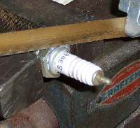
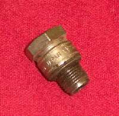
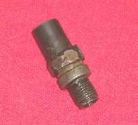
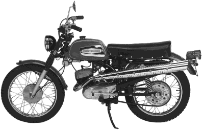
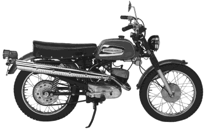

¶ Stuck engines are a fact of life for a mechanic. There can be many reasons why an engine will not turn over or appear not to turn over...
- Seized (Melted) piston(s).
- Seized Rusted Piston(s).
- Seized up crankshaft bearings.
- Seized rod bearings.
- Seized transmission.
- Seized clutch.
- Seized kickstarter gears.
- Seized electric starter, gear train and or starter clutch.
- Seized drive line or rusted chain.
- Seized brakes.
OK, you try to kick start the engine or hit the starter button and things are frozen. Don't try to kick harder. You will just end up breaking things. We must first figure out what type of seizure we are dealing with. Make sure the engine is in neutral. Now push it. If it pushes easily, you now know that the rear brakes, chain or drive line and the gears on the countershaft of the transmission are OK. Now put the engine in it's top gear and again try to push it. If the engine will turn over, It's not stuck. The problem is in the kickstarter gears. If there is only an electric starter, the problem is in it or the electric starter gears and/or starter clutch.
If it still will not turn over, pull one of the engine side covers off so you can get a wrench or socket on the crankshaft bolt. This bolt is usually on the crankshaft side that has the alternator rotor. Try to turn the crankshaft. If it will turn, then the crankshaft, piston(s), mainshaft gears and clutch are probably OK and the problem is in the kickstarter or electric starter geartrain. If it will not turn, pull in the clutch lever. If the crankshaft now turns the problem is probably in the mainshaft gears. If the crankshaft still won't turn, the piston(s) may be rusted or seized to the cylinder walls. It is possible that the mainshaft gears and the clutch are locked up but usually it is the pistons. If the clutch is seized, you probably will be able to turn the crankshaft back and forth just a bit. If so, pull the clutch cover and inspect the clutch. Like I say, most times it will be the piston(s) that are locked up. This is especially true if the engine has been sitting for a long time or if things locked up on you while riding and you skidded to a, hopefully upright, halt.
If the piston(s) are stuck put some penetrating oil down the spark plug hole(s) and try to turn the engine over using the kickstarter or wrench on the crankshaft bolt. If it will not move, work the wrench back and forth. Don't get carried away and break things. If it will not move, it will not move and we must find another way to free up the engine. More penetrating oil and letting things sit overnight may help. If not, we need to apply a bit more force.
To apply this extra force we use grease and hydraulic pressure. To do this, we make a tool to pump grease into the spark plug hole. To make this tool you take an old spark plug, of the proper type, and cut the top edge of the metal portion of the spark plug off. Take a hammer and punch and knock the porcelain center out of the Steel Spark Plug Body. Now weld a pipe fitting, that a grease gun will screw into, onto the top of the steel spark plug body.
 Cutting spark plug for Hydraulic Tool. |
 Cut spark plug for Hydraulic Tool. |
 Hydraulic Tool. |
Now we can't use the tool just yet. That would be to easy. We must first prepare the engine. For a four stroke, you must make sure the valves are closed. Because the engine is frozen, you can't turn it over to close the valves. Therefore, you must remove the cams or rocker arms so the valves will close. To do this, you may have to cut the cam chain. If you do have to cut the cam chain, check and see if the cam chain has a master link. If it does not, you will need to find a replacement that does. If no master link can be found, you will have to split the crankcases to replace the cam chain with a new endless one. Another problem is the valves themselves. If one is stuck open or bent, you must remove the cylinder head, and reseat the valve or replaced it. Then put the head back on and torque it down. Put the Hydraulic Spark Plug Tool you just made in the spark plug hole and tighten it down. Connect the grease gun and start pumping. The grease will exert thousands of pounds of pressure on the piston head, pushing it out of the cylinder.
The procedure is the same for two stokes except for one thing. Two strokes don't have valves, they have ports. As soon as the ports are uncovered the grease pressure is lost and the piston stops moving. Hopefully, the piston is now loose enough that you can pull the cylinder the rest of the way off. If you can't get the piston to move, because it has seized in a position below the ports, you may have to melt the piston out with a oxyacetylene torch. Very bad, but it might be the only way.
One last thing. If you get it broken free easily, it does not mean all is well in that engine. If you do get the engine started, odds are there is still major damage inside. Run it for a while and then check the oil for fine metal shavings and grit. It is a one in a thousand chance that things will be OK. It does happen but, most times, a bore job with new piston and rings is required.
I have stuck unto thy testimonies: O LORD, put me not to shame."
Psalms 119:30-31

 |
 |
Copyright © 1999-2005 dansmc.com. All rights reserved.